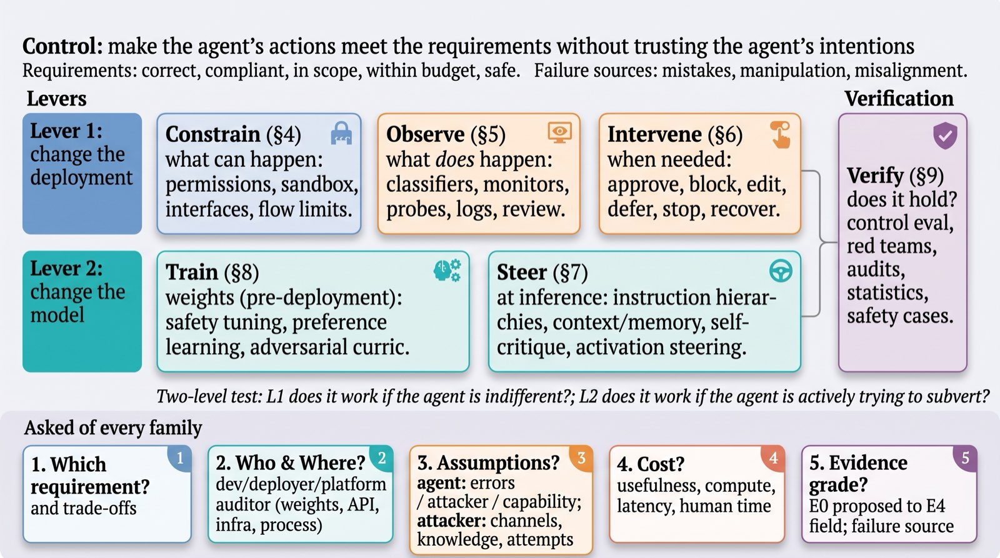

About
The Survey
Deployed AI agents must meet their operator's requirements: be correct, compliant, in scope, within budget, and safe. They cannot be trusted to meet them on their own: they make mistakes, they can be redirected by what they read, and they may pursue objectives of their own. Control is whatever makes the agent's actions meet the requirements without taking the agent's good intentions on trust. It works through two levers: changing the deployment around the agent (constrain what it can do, observe what it does, intervene when something is off) and changing the model itself, before deployment (train) or at inference time (steer); verification tests either lever. Every mechanism is graded by a two-level test: does it still work if the agent is indifferent to the requirement, and does it still work if the agent is trying to defeat it and knows how it works. This survey covers both levers across all five requirements, asks of every mechanism which requirement it serves, what it assumes about the agent, what it costs, and where it has evidence, and treats the adversarial agent as the stress test rather than the premise.
Title: Controlling Untrusted AI: A Survey. Authors: [Authors]. Status: draft v0.2, October 2026; the arXiv link will appear here. This site holds the complete reading list behind the paper, organised by the paper's own sections, and a live record of what has happened when agents were deployed, filed under the same headings.
Who It Is For
Researchers inside one mechanism family (agent security: injection defences, isolation, information-flow control; guardrails; monitoring; control evaluation; formal enforcement; post-training; steering) who want the other families on one map with the same five questions answered.
Teams deploying agents with real credentials who must choose and combine mechanisms for a requirement and a threat model.
Evaluators, auditors, and policy staff who need to know what evidence a control claim rests on and which mechanisms satisfy which governance requirements (human oversight, logging, risk management, robustness).
The Taxonomy
Agents must meet five requirements: correct, compliant, in scope, within budget and safe. They fail to meet them for three reasons. Mistakes: The agent tries to meet the requirement and fails: misread instructions, compounding errors over long tasks, irreversible side effects. Manipulation: The agent is redirected by what it reads: prompt injection, poisoned memory and tools, persistent user context that carries unearned authority. Misalignment: The agent pursues objectives of its own: reward hacking, tampering with the harness, deception, sabotage, resisting oversight.
Control works through two levers. The first changes the deployment around the agent: Constrain what it can do, Observe what it does, Intervene when something is off. The second changes the model: Train before deployment, Steer at inference time. Verify tests either lever with control evaluations, red teams, audits and statistics. Deployment and Assurance composes mechanisms into stacks, safety cases, policy and independent assurance. Every mechanism is graded by a two-level test. L1 asks whether it still works if the agent is indifferent to the requirement. L2 asks whether it still works if the agent tries to defeat it and knows how it works.

Colour Key
The Paper Collection
The collection holds 1,788 arXiv papers and 164 reports and posts from outside arXiv, placed in 56 subsections of 11 sections. Each paper has one primary subsection, a score (3, must cite; 2, relevant), a method-style label, a one-line summary where one was written, and a sentence on why it was placed there. Papers that matter to more than one subsection carry cross-references. 239 items are cited in the PDF; the rest are the reading list behind it. Reports and posts were verified against their source pages; the few not fully verified are marked.
The Sections
The Live Stream
The stream records real events in the deployment of AI agents: incidents, near misses, deployments, shipped safety features, evaluations, research with direct deployment relevance, policy, and vendor disclosures. Each item is marked good, bad or mixed and classified into the taxonomy: which failure source, which requirement, which control operation, which subsections. The stream was seeded by a verified sweep and is refreshed every six hours by a collector that reads RSS feeds and search results and classifies candidates with a language model. Every item is fetched and its date and claims checked against the source before publication; unverifiable items are not published.
| Kind | Meaning |
|---|---|
| incident | harm occurred |
| near-miss | caught before harm |
| deployment | an agent put into real use, with or without reported controls |
| safety-feature | a vendor or deployer shipped a control mechanism |
| evaluation | a published test of deployed or deployable agents, including system cards and red-team reports |
| research | a paper or report with direct deployment relevance |
| policy | law, regulation, standard, enforcement, lawsuit |
| disclosure | vendor postmortem or security advisory |
| Polarity | Meaning |
|---|---|
| bad | a failure or harm |
| good | a success or a control that worked or shipped |
| mixed | both, or neither clearly |
| Evidence | Meaning |
|---|---|
| first-party | the vendor or deployer said so |
| press | reported by a news organisation |
| researcher | reported by a researcher or research group |
| regulator | stated by a regulator or agency |
| court | from a court filing or ruling |
| incident-database | recorded in an incident database |
| Date precision | Meaning |
|---|---|
| day | the day is known |
| month | the month is known; shown as the month |
| year | only the year is known |
Submit an Item
Readers can submit items through a GitHub issue. The form asks for a public URL, a date, two to four factual sentences, whether the item went well or badly, the failure source and the operation involved. The collector reads open submissions every six hours, classifies them, verifies the URL and adds them to the stream marked for review until an editor confirms the classification.
Cite
Until the arXiv version appears, cite the draft as below.
@article{authors2026controlling,
title = {Controlling Untrusted AI: A Survey},
author = {[Authors]},
year = {2026},
note = {Draft v0.2, October 2026. arXiv link to come.},
url = {https://ymingl.com/controlling-untrusted-ai/}
}
Data
The site reads only the files below; they are regenerated from the paper's repository and by the collector. All are UTF-8 JSON under site/data/.
The survey's structure: title, thesis, readers, requirements, failure sources, operations and the eleven sections with their subsections, plan bullets and counts.
One object per arXiv paper: key, arXiv id, title, authors, year, primary subsection, score, whether it is cited in the PDF, method-style label, one-line summary, placement reason, cross-references.
Reports and posts from outside arXiv: key, title, authors, year, venue, URL, primary subsection, label, one-line summary, verification confidence.
Counts for the site: papers, reports, cited items, subsections, sections, papers per year and per section, stream item count and last update.
The twelve newest stream items, newest first, in the item schema of stream.json; read by the landing page.
The live stream: one object per verified event with date, source URL, publisher, kind, polarity, summary, failure sources, requirements, operations, subsections, domain, actors, evidence, related papers, tags and verification note.
Provenance and Limitations
Three limits apply. The paper cards rest on abstract-level evidence: labels, summaries and placements were written from abstracts and, for cited papers, from the paper text; a card is a pointer, not a review. Stream items are classified by a language model and then verified for URL, date and claims; human review of the classification is pending for items so marked, and until then a classification may be wrong. The collection is a snapshot of the draft: subsections, counts and placements will change as the paper does, and the generated dates above say when.
Colophon
Set in Newsreader, Inter and IBM Plex Mono, served by Google Fonts with system fallbacks. Static HTML, CSS and JavaScript, no build step, no analytics, no cookies, no trackers; the only third-party request is for the typefaces. Light and dark themes follow the system and switch in the masthead. Text and data are released under CC BY 4.0.